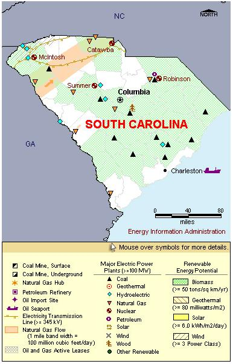

State Overview
There are four operating nuclear power plants in South Carolina:
Catawba in York County
- Catawba's two nuclear units are owned by a diverse mix of an investor-owned utility, cooperatives, and municipality groups in both North Carolina and South Carolina.
Oconee in Oconee County
- The Oconee plant obtained a 20-year extension of the operating license in May 2000.
H.B. Robinson in Darlington County
- The number 2 was added to the name to distinguish it from the coal-fired unit 1 at the Robinson Plant.
- On March 7, 1971, H.B. Robinson became the first commercial nuclear plant to go on line in the southeastern United States.
- On April 19, 2004, the Nuclear Regulatory Commission (NRC) granted a 20-year extension for this plant.
Virgil C. Summer in Fairfield County
- Also located on the Summer site, is the decommissioned experimental Carolinas-Virginia Tube Reactor (CVTR), a pressurized tube, heavy water reactor that operated from 1963 to 1967.
Contribution of Nuclear Power
South Carolina is 3rd in the nation with over 6,500 MW of nuclear capacity and produces nearly 6.5% of the country’s nuclear generated electricity.
Nuclear power was recently surpassed by coal as South Carolina’s primary fuel source in terms of capacity; however, it continues to produce over half of the State’s electricity.
Like many States with a large nuclear power industry, South Carolina is a net electricity exporter, exporting over 10% of its electricity.
License Renewals
- Catawba: Catawba’s licenses were renewed on December 5, 2003 until December 5, 2043.
- Oconee: The licenses for all three of Oconee’s reactors were renewed on May 23, 2000. Unit 1 was extended until February 6, 2033; Unit 2 until October 6, 2033; and Unit 3 until July 19, 2034.
- Robinson: On April 19, 2004, the Robinson plant received a 20-year license extension until July 31, 2030.
- Summer: The license for the Summer plant was renewed on April 23, 2004, and extended until August 6, 2042.
New Applications
- Summer: A Combined License Application was submitted on March 27, 2008, for two new, Advanced Passive 1000 (AP1000) reactors at the Summer plant.
- William States Lee III: On December 13, 2007, a Combined License Application was submitted for a new, two reactor plant in Cherokee County. The reactors would use the Advanced Passive 1000 (AP1000) design.
Permanently Shutdown Commercial Reactors
- Carolinas-Virginia Tube Reactor (CVTR) in Fairfield County

|
| South Carolina Total Electric Power Industry, Summer Capacity and Net Generation, by Energy Source, 2008 |
| Primary Energy Source |
Summer Capacity
(MW) |
Share of State Total
(Percent) |
Net Generation
(Thousand MWh) |
Share of State Total
(Percent) |
| Nuclear |
6,472 |
27.0 |
51,763 |
51.3 |
| Coal |
7,242 |
30.2 |
41,540 |
41.1 |
| Hydro and Pumped Storage |
4,003 |
16.7 |
-143 |
-0.1 |
| Natural Gas |
5,335 |
22.2 |
5,729 |
5.7 |
| Other1 |
- |
- |
94 |
0.1 |
| Other Renewable1 |
256 |
1.1 |
1,816 |
1.8 |
| Petroleum |
705 |
2.9 |
180 |
0.2 |
| Total |
24,012 |
100.0 |
100,978 |
100.0 |
|
|
|
|
|
| South Carolina Nuclear Power Plants, Summer Capacity and Net Generation, 2008 |
| Plant Name/Total Reactors |
Summer Capacity
(MW) |
Net Generation
(Thousand MWh) |
Share of State Nuclear
Net Generation
(Percent) |
Owner |
Catawba
Unit 1, Unit 2 |
2,258 |
18,976 |
36.7 |
Duke Energy Carolinas, LLC |
H B Robinson
Unit 2 |
710 |
5,427 |
10.5 |
Progress Energy Carolinas Inc |
Oconee
Unit 1, Unit 2, Unit 3 |
2,538 |
20,181 |
39.0 |
Duke Energy Carolinas, LLC |
V C Summer
Unit 1 |
966 |
7,178 |
13.9 |
South Carolina Electric&Gas Co |
4 Plants
7 Reactors |
6,472 |
51,763 |
100.0 |
|
Plant Profiles
Catawba Nuclear Station
| Catawba |
| Unit |
Summer Capacity
(MW) |
Net Generation
(Thousand MWh) |
Summer Capacity Factor
(Percent) |
Type |
Commercial Operation Date |
License Expiration Date |
| 1 |
1,129 |
8,773 |
88.7 |
PWR |
6/29/1985 |
12/5/2043 |
| 2 |
1,129 |
10,203 |
103.2 |
PWR |
8/19/1986 |
12/5/2043 |
| |
2,258 |
18,976 |
95.9 |
|
|
|
Operator: Duke Power Company
Location and Service Territory: The Catawba plant is located on a 391-acre peninsula on Lake Wylie in York County, South Carolina.
Construction Cost: $6.594 billion (2007 USD)
Reactor Descriptions: Both units are Westinghouse four-loop pressurized water reactors.
Cooling System: The Catawba facility is cooled by six mechanical draft cooling towers that draw water from Lake Wylie.
Oconee Nuclear Station
| Oconee |
| Unit |
Summer Capacity
(MW) |
Net Generation
(Thousand MWh) |
Summer Capacity Factor
(Percent) |
Type |
Commercial Operation Date |
License Expiration Date |
| 1 |
846 |
6,215 |
83.9 |
PWR |
7/15/1973 |
2/6/2033 |
| 2 |
846 |
6,391 |
86.2 |
PWR |
9/9/1974 |
10/6/2033 |
| 3 |
846 |
7,575 |
102.2 |
PWR |
12/16/1974 |
7/19/2034 |
| |
2,538 |
20,181 |
90.8 |
|
|
|
Operator: Duke Power Company
Location and Service Territory: The Oconee Nuclear Station, near Greenville, South Carolina, occupies 510 acres in largely rural Oconee County.
Construction Cost: $1.961 billion (2007 USD)
Reactor Descriptions: All three Oconee nuclear units are Babcock & Wilcox Lowered-loop pressurized water reactors.
Cooling System: Oconee relies on a “once-through heat dissipation system that withdraws cooling water from the Little River arm of Lake Keowee, from underneath a skimmer wall. The discharge for the cooling water is located on the Keowee River arm of the lake just above the Lake Keowee dam.” In addition to cooling water for Oconee, Lake Keowee provides power to nearby hydro facilities and drinking water to local communities.
H.B. Robinson 2 Nuclear Station
| H B Robinson |
| Unit |
Summer Capacity
(MW) |
Net Generation
(Thousand MWh) |
Summer Capacity Factor
(Percent) |
Type |
Commercial Operation Date |
License Expiration Date |
| 2 |
710 |
5,427 |
87.3 |
PWR |
3/7/1971 |
7/31/2030 |
| |
710 |
5,427 |
87.3 |
|
|
|
Operator: Progress Energy Carolinas, Inc.
Location and Service Territory: The H.B. Robinson 2 Nuclear Station, also known simply as the Robinson Plant, is located on a 5,000-acre site near Hartsville, South Carolina
Construction Cost: $408.5 million (2007 USD)
Staffing: More than 400 workers are employed by the plant.
Reactor Description: The Robinson Plant has a Westinghouse three-loop pressurized water reactor.
Cooling System: The plant uses a once-through system that draws water from Lake Robinson.
(Virgil C.) Summer Nuclear Station
| V C Summer |
| Unit |
Summer Capacity
(MW) |
Net Generation
(Thousand MWh) |
Summer Capacity Factor
(Percent) |
Type |
Commercial Operation Date |
License Expiration Date |
| 1 |
966 |
7,178 |
84.8 |
PWR |
1/1/1984 |
8/6/2042 |
| |
966 |
7,178 |
84.8 |
|
|
|
Description Operator: South Carolina Electric & Gas Co.
Location and Service Territory: The Virgil C. Summer nuclear station occupies a site near Jenkinsville in Fairfield County, South Carolina.
Construction Cost: $2.563 billion (2007 USD)
Staffing: Summer employs about 825 employees.
Reactor Description: The reactors are Westinghouse three-loop pressurized water reactors, each holding 157 fuel assemblies. The internal diameter of the reactor vessel at Summer is 172-inches, roughly a foot larger than other vessels of the same design.
Cooling System: Cooling water is drawn from the Broad River.
see also:
more annual nuclear statistics
projected electricity capacity to 2035
international
electricity statistics |
|